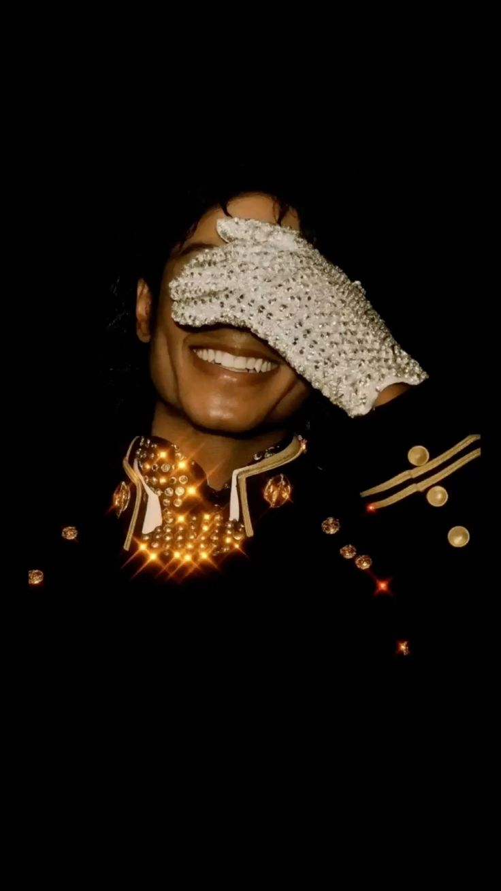

O artista mais premiado da história da música.
Michael Jackson foi um cantor, compositor e dançarino norte-americano, conhecido como o
"Rei do Pop". Ele marcou a história da música com sucessos como Thriller, Billie Jean e Beat It, além de revolucionar
videoclipes e performances no palco. Seu talento e influência continuam inspirando artistas no mundo
todo.
